Alibaba представи Qwen-Robot Suite: Фамилия от модели за физически въплътен изкуствен интелект
Лабораторията за изкуствен интелект Tongyi Lab, част от китайския технологичен конгломерат Alibaba Group, обяви официалното пускане на Qwen-Robot Suite [1] — нова фамилия от специализирани фундаментални модели за физически въплътен изкуствен интелект (Embodied AI). Фамилията е проектирана да служи като мост между визуално-езиковото възприятие и реалните физически действия, реализирайки концепцията за Vision-Language-Action (VLA) архитектура. Разработката цели да предостави унифицирана софтуерна инфраструктура за управление на роботизирани системи, преодолявайки сегашната фрагментация в софтуера за контрол на хардуера.
Основната цел на проекта е да превърне традиционния изкуствен интелект, функциониращ изцяло в дигиталното пространство, в операционна система за физически машини. Вместо да се разчита на отделни, несвързани алгоритми за компютърно зрение, планиране на траектории и езиков контрол, Qwen-Robot Suite обединява тези аспекти в споделена невронна архитектура.
Три стълба на роботизирания интелект
Архитектурата на Qwen-Robot Suite е разделена на три специализирани модела, които работят съвместно, за да осигурят навигация, физическа манипулация и симулационно предвиждане на околната среда.
1. Qwen-RobotNav: Автономна навигация чрез контролируемо наблюдение
Моделът за навигация и локализация Qwen-RobotNav е изграден върху мултимодалния модел Qwen3-VL. За неговото обучение изследователите са използвали база данни от 15,6 милиона примера, покриващи широк спектър от сценарии от реалния свят.
Qwen-RobotNav успява да обедини четири основни функции в единна мрежа:
- Следване на сложни текстови инструкции по естествен път;
- Семантично търсене на специфични обекти в непозната среда;
- Динамично проследяване на движещи се целеви обекти;
- Автономно движение през препятствия.
Ключовата иновация в този модел е методът на контролируемо наблюдение (controllable observation). Той позволява на робота активно да насочва своите камери и сензори, за да събира по-добра визуална информация, вместо да разчита на статичен пасивен видеопоток.
2. Qwen-RobotManip: Унификация на физическата манипулация
Вторият стълб в пакета е Qwen-RobotManip — специализиран модел за управление на роботизирани ръце и манипулатори, базиран на езиковия модел Qwen3.5-4B. Моделът е преминал сериозно обучение, включващо над 38 000 часа разнообразни данни за физически взаимодействия и задачи.
Голямото предизвикателство при създаването на универсални модели за управление на роботи е огромното хардуерно разнообразие от роботизирани ръце, захвати и конфигурации на ставите. Tongyi Lab решава този проблем, като въвежда канонично пространство за състояние и действие (canonical state-action space). Qwen-RobotManip транслира разнородните сетивни данни от различен хардуер в това единно математическо пространство, позволявайки на модела да управлява разнообразни роботизирани системи без необходимост от специфично преобучение за всеки отделен модел роботизирана ръка.
3. Qwen-RobotWorld: Симулация и предсказване на физиката
Третият компонент, Qwen-RobotWorld, представлява видео модел на света (video world model), разработен за симулиране на физическото развитие на околната среда. Преди роботът да предприеме физическо действие — като например отваряне на врата или преместване на стъклена чаша — Qwen-RobotWorld генерира визуални предсказания за това как ще се промени сцената в резултат на неговото движение.
Този симулационен слой позволява на робота да извършва предварително мисловно планиране и оценка на рисковете. Ако симулацията предвиди, че планираното действие ще доведе до падане на предмет или сблъсък, системата може автономно да коригира траекторията си преди изпращането на физическия сигнал към моторите.
Индустриално внедряване и бъдещето на Embodied AI
Пускането на пазара на Qwen-Robot Suite съвпада с ускоряващата се вълна от инвестиции в сферата на физическия ИИ в Китай. Към момента фамилията модели не е пусната за масово свободно ползване, а се намира във фаза на пилотно тестване с избрани корпоративни клиенти чрез облачната платформа Alibaba Cloud. Тези партньорства включват компании от секторите на логистиката, интелигентното производство и автоматизираното складово управление.
С този ход Alibaba се позиционира директно срещу водещите западни инициативи в роботиката, демонстрирайки, че бъдещето на хардуерната автоматизация зависи критично от наличието на мощни, мултимодални софтуерни ядра. Очаква се успехът на Qwen-Robot Suite да ускори комерсиализацията на хуманоидни роботи и интелигентни индустриални системи в световен мащаб през следващите години.

Схематично представяне на архитектурата на Qwen-Robot Suite и връзката между навигация, манипулация и симулация на света.
Източници:
[1]: Qwen-Robot Suite - Qwen Blog